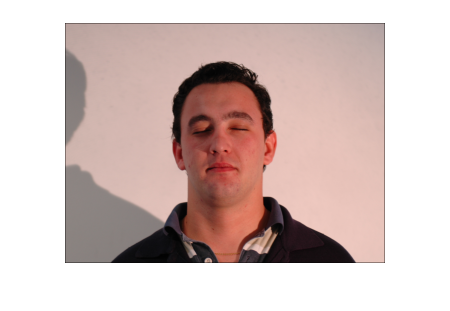
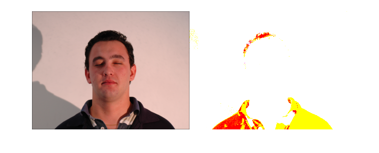
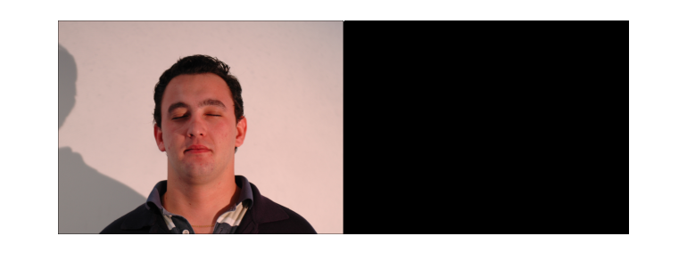
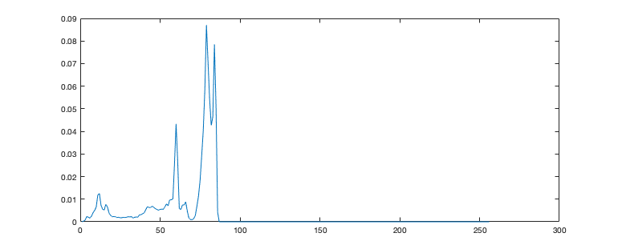
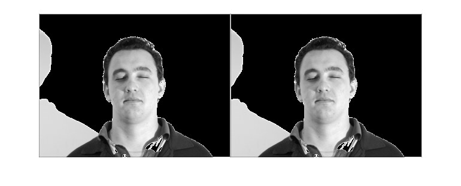
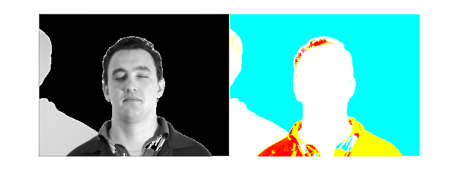
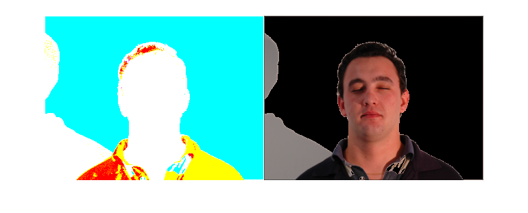
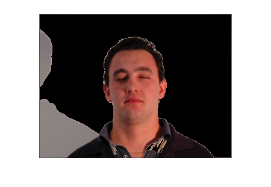

Contents
- Assignment 3 Program requirements
- Clears the values from the workspace
- Reading the image and adjusting the size of the input image.
- Specify separate output channels into different color planes.
- Calculate the overall maximum value.
- Plot the histogram and determing the level of luminence.
- Eliminate the luminance in the background.
- Removing the false positive
- Converting LUV back to RGB
- Conver image from LUV back to RGB
- Perform skin detection
- Final Result
Assignment 3 Program requirements
Requirements: 1.Download face images ?face_good.bmp? and ?face_dark.bmp? from blackboard. Download function code ?colorspace.m? for different color space conversion. 2.Perform skin detection on both images using the skin detection method introduced in the paper ?0REF_Paper_Survey on Skin Color Techniques?. 3.Remove the large false-positive area detected from the ?face_dark? image. Clearly describe how you removed the large false positive part in your report.
%4. Show the detection results in your report, keep detected skin of the % original image and mask out everything else. The final detection % results with tiny/small noisy features (that are not skin such as % following figure) are accepted.
Clears the values from the workspace
clear all;
clc;
Reading the image and adjusting the size of the input image.
image = imread('standard_test_images/face_dark.bmp');
height = size(image,1);
width = size(image,2);
figure, imshow(image);
 Specify separate output channels into different color planes.
Colorspace function provided.
im_to_LUV = colorspace('Luv<-rgb', image); L=im_to_LUV(:,:,1); %Luminence U=im_to_LUV(:,:,2); V=im_to_LUV(:,:,3); %Value imshowpair(image, im_to_LUV, 'montage');
Calculate the overall maximum value.
Finding the overall maximum value for the luminance of each pixel in the matrix L, If L is a matrix, then max(L) is a row vector containing the max value of each column. The max method ouside returns the maximum of L if L is a vector.
range=max(max(L));
imshowpair(image, range, 'montage');
 Plot the histogram and determing the level of luminence.
This program is to get the normalized histogram of the image and display using plot. The plot histogram function is commented out for testing purposes.
histogram = myhist(L);
plot(histogram)
%imshow(L)
 Eliminate the luminance in the background.
After inspecting the histogram values to find the local minimum, it was determined that the local minimum was 70.
localmin = 70;
Removing the false positive
This iteration splits the image into a rows and columns array. The image also gets resized and returns a row vector whose elements contain the length of the corresponding dimensions of the Luminence. Loop variables i and j scan through all the values from 1 - 255 and if any of the values in the background are more than the local minimum, they are set to 0 to make the background black. This cuts out the image and discards the background.
[r,c]=size(L); for i = 1 : r for j = 1 : c if L(i,j) > localmin L(i,j) = 0; end end end L2=L; imshowpair(L, L2, 'montage');
Converting LUV back to RGB
The color values are still separated into different color channels and now we need to re-combine them again using this given method to add the new luminence into the original image color plane by putting them back where they belong.
luv_to_rgb(:,:,1)=L2;
luv_to_rgb(:,:,2)=U;
luv_to_rgb(:,:,3)=V;
imshowpair(L2, luv_to_rgb, 'montage');
 Conver image from LUV back to RGB
finalImage = colorspace('rgb<-Luv',luv_to_rgb); imshowpair(luv_to_rgb, finalImage, 'montage');
Perform skin detection
Perform skin detection on both images using the skin detection method introduced in the paper ?0REF_Paper_Survey on Skin Color Techniques?.
image1 = (finalImage(:,:,1)>95) & (finalImage(:,:,2)>40) & (finalImage(:,:,3)>20); image2 = (finalImage(:,:,1)-finalImage(:,:,2)>15) | (finalImage(:,:,1)-finalImage(:,:,3)>15); image3 = (finalImage(:,:,1)-finalImage(:,:,2)>15) & (finalImage(:,:,1)>finalImage(:,:,3)); imagesample = image1 & image2 & image3;
Final Result
imshow(finalImage);